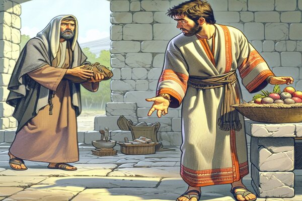
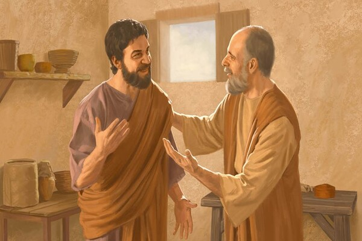

The Sermon On The Mount: Anger
Ye have heard that it was said of them of old time, Thou shalt not kill; and whosoever shall kill shall be in danger of the judgment:
But I say unto you, That whosoever is angry with his brother without a cause shall be in danger of the judgment: and whosoever shall say to his brother, Raca, shall be in danger of the council: but whosoever shall say, Thou fool, shall be in danger of hell fire.
Therefore if thou bring thy gift to the altar, and there rememberest that thy brother hath ought against thee;
Leave there thy gift before the altar, and go thy way; first be reconciled to thy brother, and then come and offer thy gift.
Agree with thine adversary quickly, whiles thou art in the way with him; lest at any time the adversary deliver thee to the judge, and the judge deliver thee to the officer, and thou be cast into prison.
Verily I say unto thee, Thou shalt by no means come out thence, till thou hast paid the uttermost farthing.
Matthew 5:21-26
- 
- 